open-mercy 卡面预览
资料目录 research/open-mercy · 2026-11-13 · B 版（官方卡面矢量描摹及其四色渲染）按用户决定用于个人学习
使用决定（2026-11-13）：采用 B 版官方卡面矢量描摹及其四色 webp 渲染，仅用于本人非商业学习，权限申明见本页末尾。B 版是纯友尽版（No Mercy）卡面：68 个唯一卡面可拼出完整 168 张牌堆；不含任何 Flip 专属牌（+1 / Wild +2 / +5 / 抽到指定色 / Flip 牌 / 暗面四色均缺失）。因此友尽模式卡面现成，Flip 模式需另做第三套卡面，基础模式继续用现有 CC0 54 张。
A · 官方实物参考（cards/ 12 张 PNG）个人学习采用
照片/扫描，可见划痕与噪点；用于理解牌面符号语言。
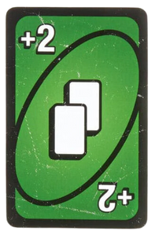
绿色 Draw 2（+2）
椭圆中央两张白牌 + 四角 +2。
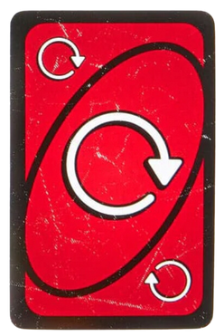
红色 Reverse
粗白环形箭头，四角小回环符号。
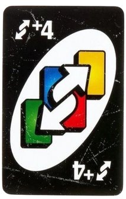
Wild Reverse Draw 4
黑底 + 四色椭圆 + 双向箭头，友尽版独有。
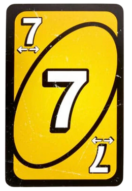
黄色 7（换手）
大数字 7 配双向小箭头，表示交换手牌。
B · 官方卡面矢量描摹（cards-svgs/ 20 个 SVG）个人学习采用
单个 60~756 KB 的复杂路径描摹，<text> 元素为 0；这些只是单色参考源，运行时使用下面的四色 webp。
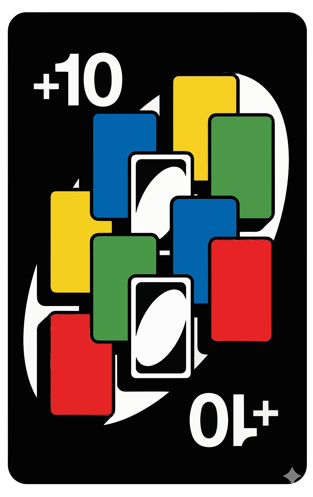
Wild Draw 10
友尽版最高罚牌，+10 是叠链上限。
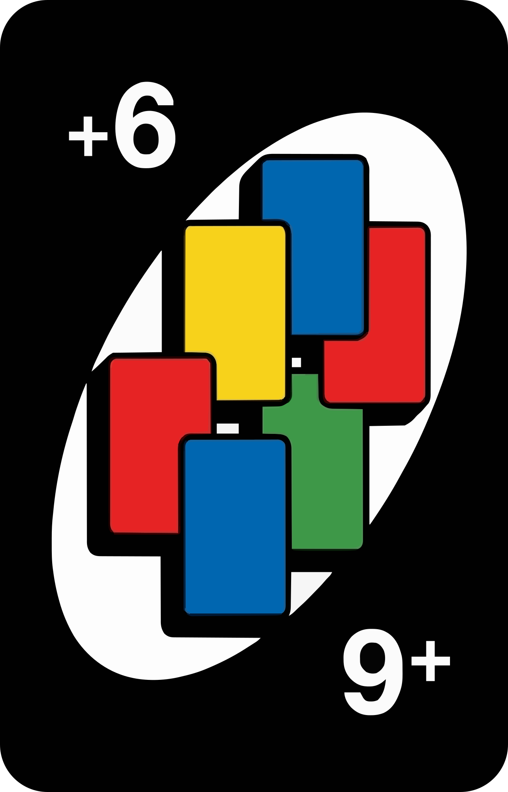
Wild Draw 6
无打出限制、不可被质疑。
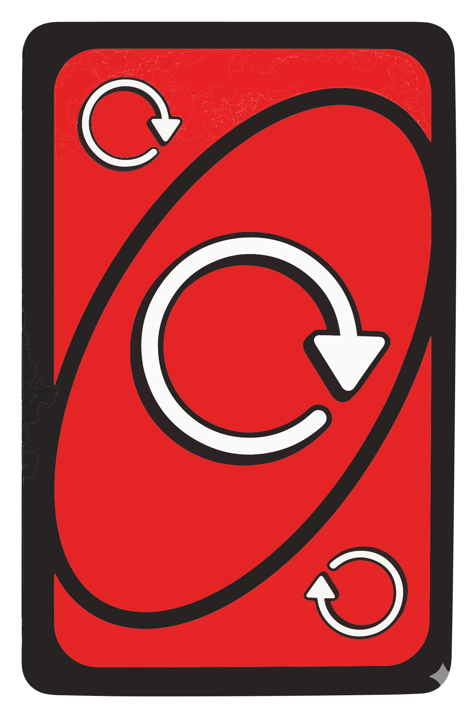
Skip Everyone（红）
跳过所有其他玩家，出牌者再来一回合。
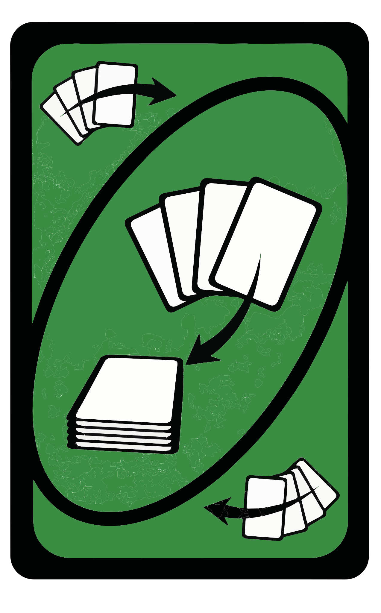
Discard All（绿）
一次弃掉手中所有同色牌。
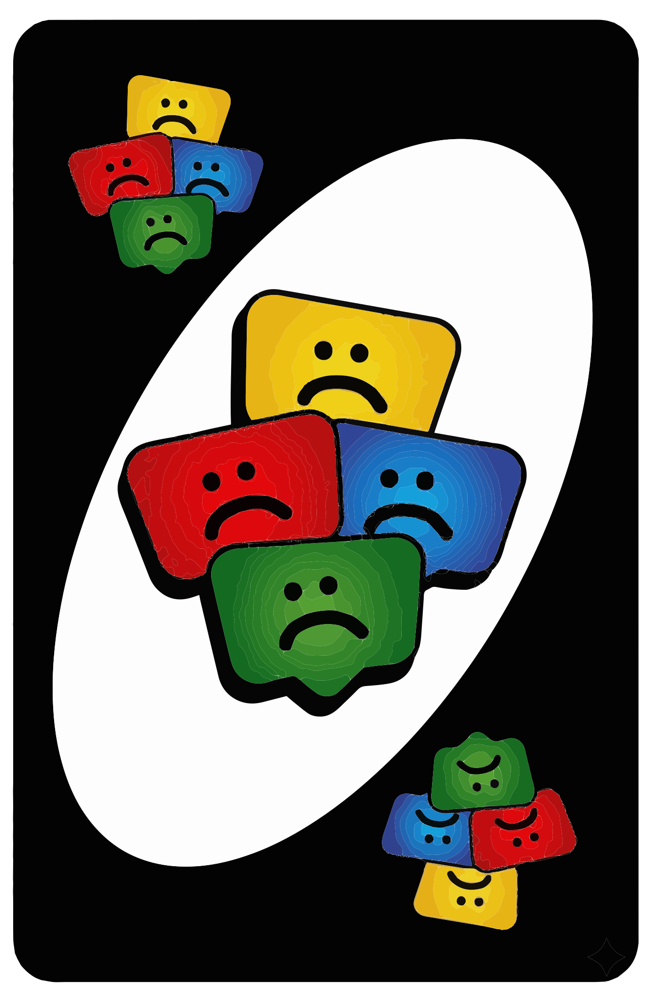
Wild Color Roulette
下家选色后一直抽到该颜色，Wild 不计。
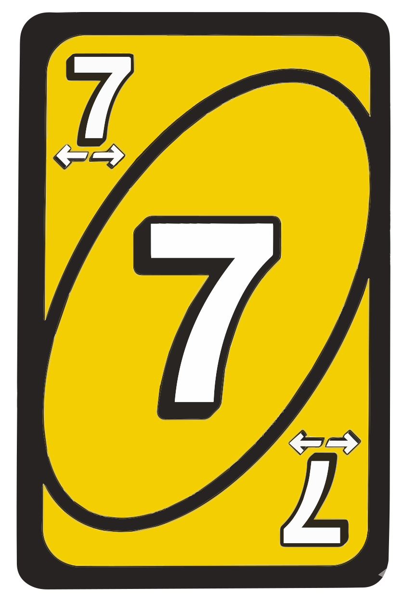
7（换手）
数字牌 7 自带换手效果。
B+ · 完整四色渲染（cards-webp/ 68 个 webp，已提取）友尽模式可直接拼牌堆
数字 0~9 × 4 色 = 40 · 彩色功能牌（+2 / +4 / Skip / Reverse / 全员跳过 / 全弃）× 4 色 = 24 · 万能牌（+6 / +10 / 反转+4 / 颜色轮盘）= 4，合计 68 个唯一面，按份数复制成官方 168 张。
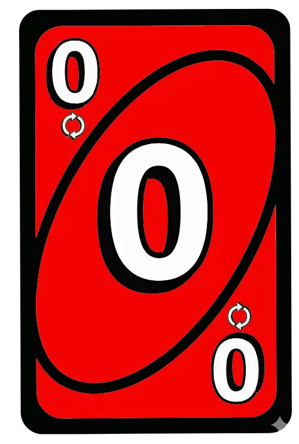
红 0（传手）
四色变体齐全，示例之一。
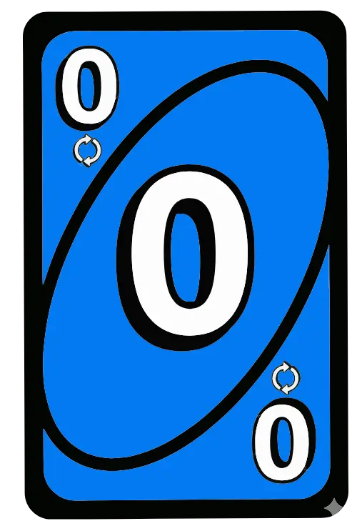
蓝 0（传手）
同一牌型的换色复用。
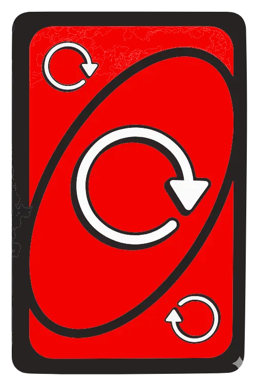
全员跳过（红 webp）
与上方 SVG 描摹同源的渲染结果。
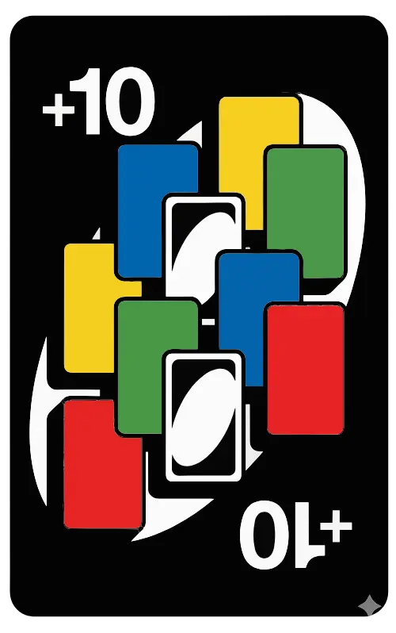
Wild +10（webp）
万能牌无颜色变体。
C · 项目现有 CC0 基础版卡面（research/cards/）基础模式继续使用
来源 github.com/celsiusnarhwal/uno（CC0），切自 Wikimedia Commons UNO_cards_deck.svg；受「牌面素材不可修改」红线保护，三个模式都不改动这 54 张。
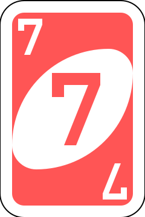
红 7（基础版）
标准 UNO 美术，与 B 版 No Mercy 风格明显不同。
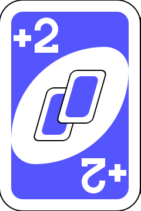
蓝 +2（基础版）
同一效果，两套视觉语言。
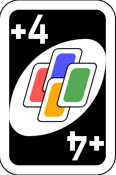
Wild +4（基础版）
友尽版取消普通 Wild / Wild +4。